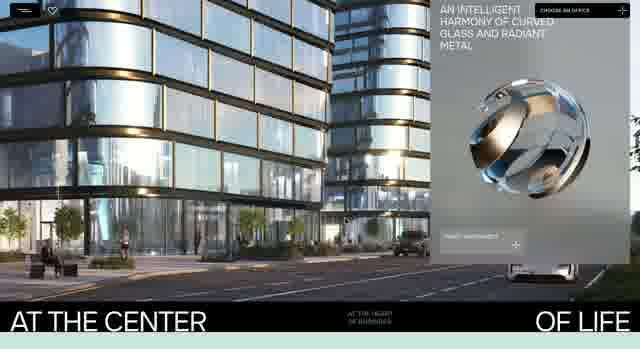
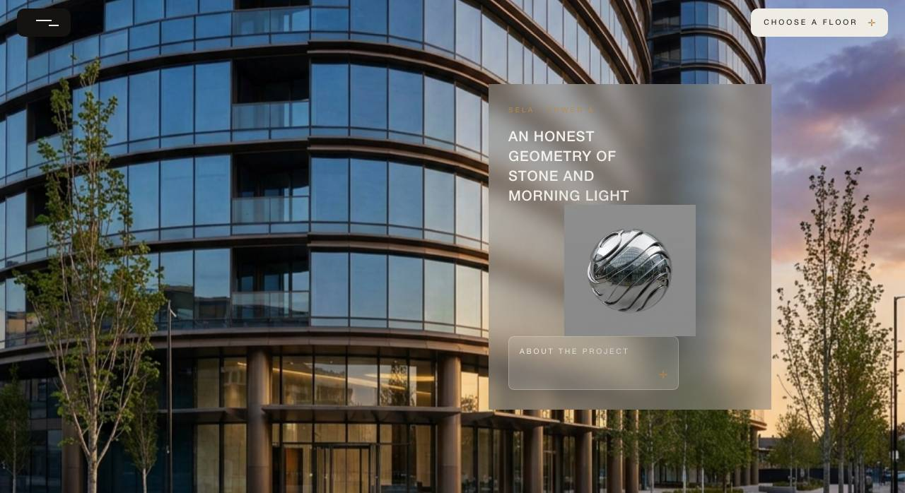
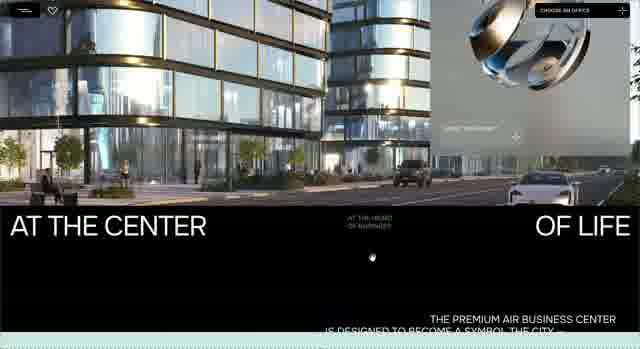
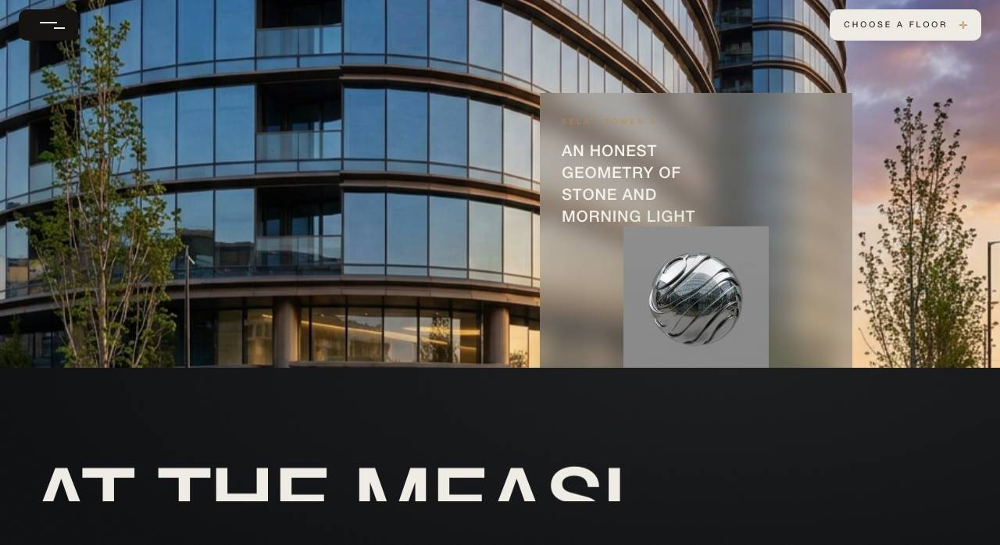

i1 sticky-card v2 — покадрова хорео-звірка з записом Єгора 21.06.54 (еталон)
Зліва = ЖИВИЙ запис (2560×1396, 60fps, 8.76s). Справа = наш білд (скрол-прогрес p по треку 460vh).
Темп нормалізовано: t0≈0.3s (початок скролу), span до кінця запису (запис обривається на ~25% накриття).
Біт 0 — старт: фасад full-bleed, картки ще нема
реф t=0.25s (p≈0.0)білд p=0.00
Біт 1 — картка входить справа (glass, текст)
реф t=1.25s (p≈0.12)білд p=0.10
Біт 2 — сфера в картці; початок FREEZE
реф t=2.0s (p≈0.20)білд p=0.20
Біт 3 — FREEZE середина: картка нерухома, фон панить фасад→вулиця
реф t=4.25s (p≈0.47)білд p=0.45
Біт 4 — FREEZE фінал: вулиця повністю, картка досі на місці
реф t=5.75s (p≈0.64)білд p=0.55
Біт 5 — темна секція починає накривати знизу (нативний sticky-стек)


реф t=6.25s (p≈0.70)білд p=0.65
Біт 6 — накриття ~25% (тут запис закінчується)


реф t=8.25s (p≈0.94, кінець запису)білд p=0.75
Понад запис — накриття завершується (у записі не зафіксовано, за SPEC)
—білд p=0.90
🔴 ВЕРДИКТ ЄГОРА (С33-2): ВІДХИЛЕНО — «купа відмінностей». Покадровий розбір на 1280px підтвердив КОРІНЬ: у референсі картка НІКОЛИ не замерзає — вона їде ЗВИЧАЙНИМ потоком через увесь в'юпорт (top 90vh→за верх) над повільно панованим пінованим фоном; темна секція йде слідом у тому ж потоці з КОНСТАНТНИМ зазором 14vh. Мій v2-freeze (картка прибита 40% треку) — вигадка з неправильного декоду С32, як і v1 exit-up. Пінований у сцені ТІЛЬКИ ФОН.
⏭️ v3: закон переписано (SPEC atoms/air-sticky-card v3) + зібрано CD-RUN-air-sticky-v3 з розкадровкою 10 бітів (beat-01…beat-10, scrollY-контракт на кожен) + історія двох відхилень у 00-READ-FIRST, щоб CD не вигадував пін утретє.